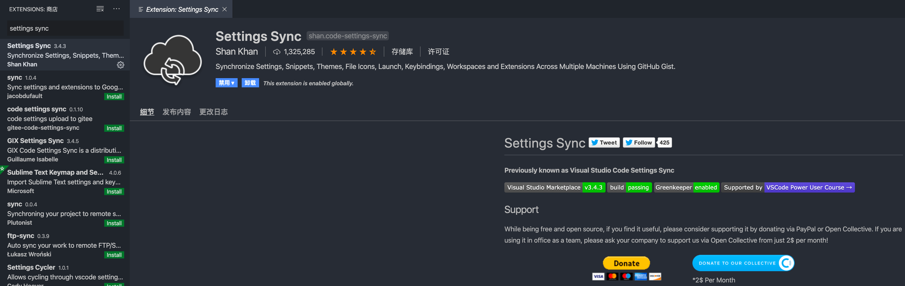

Vscode使用setting Sync插件同步设置
首先在vscode插件中心安装 setting-sync 这个插件。
然后登陆GitHub进入你的
Settings -> Developer settings界面，点击Generate new token。
按照下图进行设置。

点击
Generate token进行生成，复制该字符串。
回到vscode，在任意界面按 Alt + Shift + U，在弹出框中选择 LOGIN WITH GITHUB，然后在网页中选择授权，如果看到授权成功则可以关闭了。
回到 vscode，会弹出一个界面选择本地的 Gist 还是创建一个新的，如果本地没有的话则点击 SKIP (NEW ONE WILL BE CREATED AUTOMATICALLY)。
使用组合键 Alt + Shift + D 即可下载配置。

配置会出现在用户设置中，其中包含了 setting-sync(sync githubg 同步模块) 的所有配置，当想更换 gist 时将新值在此进行替换即可。开启 autoUpload 和 autoDownload 为 true 时会在每次修改配置进行自动上传，每次打开vscode时自动下载。

如若出现 token 配置无问题却出现类似上图报错无法上传配置时，可按 Ctrl(Command) + Shift + P 开启命令面板，找到同步命令，选择 Reset Extension Settings 重置所有配置，在通过 Alt(Option) + Shift + U 进行同步。
如果忘记了 Github 的 token 可以进入设置页面重新生成。
参考
https://www.jianshu.com/p/c10ac793eec0
https://juejin.im/post/5ddcee805188256eb4616908
转载请注明来源，欢迎对文章中的引用来源进行考证，欢迎指出任何有错误或不够清晰的表达。可以在下面评论区评论，也可以邮件至 jaytp@qq.com
文章标题:Vscode使用setting Sync插件同步设置
本文作者:John Doe
发布时间:2020-01-16, 17:49:36
最后更新:2020-01-16, 18:12:00
原始链接:http://yoursite.com/2020/01/16/%E5%B0%8F%E6%8A%80%E5%B7%A7/Vscode%E4%BD%BF%E7%94%A8setting-Sync%E6%8F%92%E4%BB%B6%E5%90%8C%E6%AD%A5%E8%AE%BE%E7%BD%AE/版权声明: "署名-非商用-相同方式共享 4.0" 转载请保留原文链接及作者。